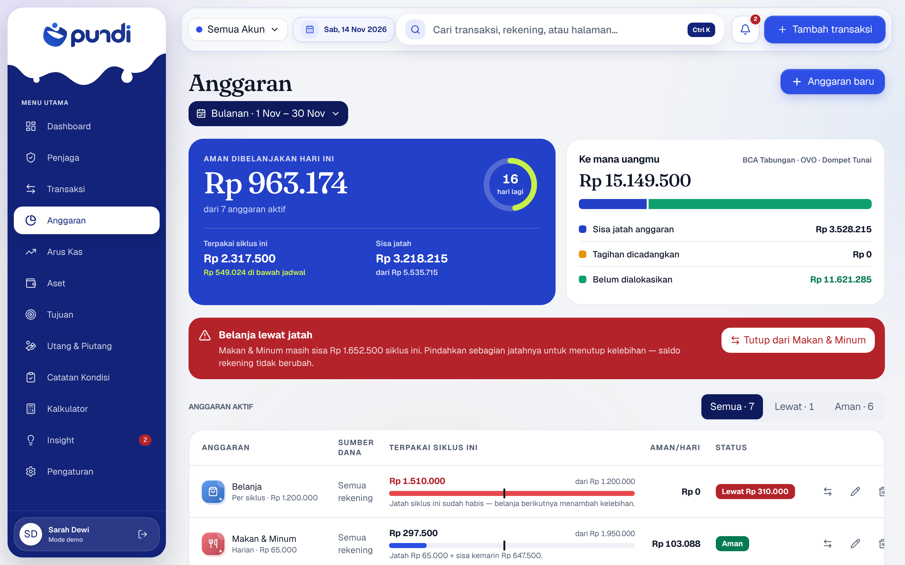
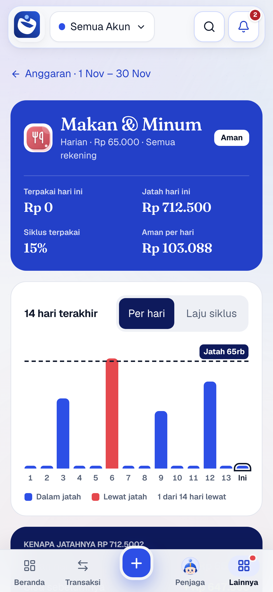
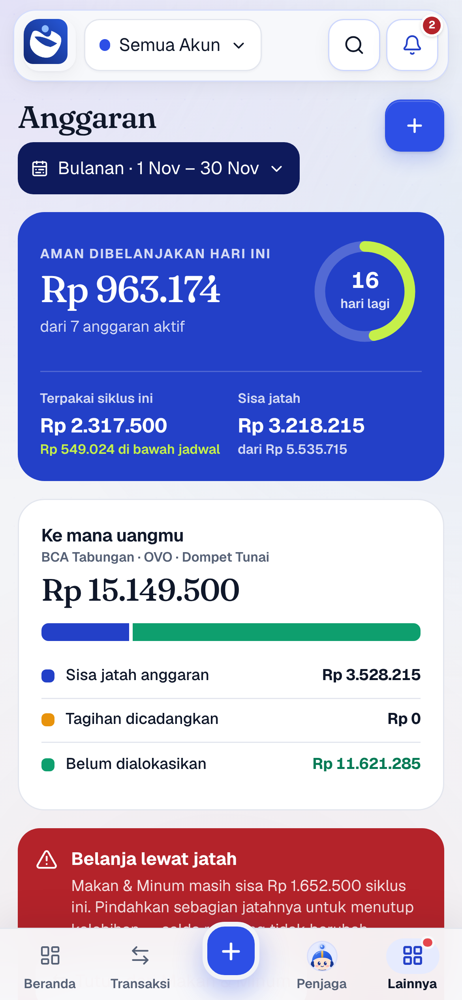

STUDI KASUS UI/UX APLIKASI KEUANGAN PRIBADI
Fitur baru · Anggaran per siklus gajian
Anggaran yang Jujur, dari Gajian ke Gajian.
Pundi membantu mencatat, menjatah, dan memindahkan uang harian dalam satu aplikasi yang ringan di ponsel — dirancang dari keluhan nyata pengguna, bukan dari spreadsheet.
- Siklus GajianAnggaran mulai di tanggal uangmu masuk dan lanjut otomatis tiap bulan.
- Jatah yang JujurDihitung sejak hari dibuat — tanpa jatah mundur, tanpa angka minus misterius.
- Pindahkan JatahKelebihan makan? Tutup dari sisa anggaran lain dalam dua ketukan.
- PenjagaCeritakan belanjamu, asisten menyusun draft transaksinya untuk kamu setujui.



Desain yang baik bikin uang terasa tenang
MASALAH NYATA → KEPUTUSAN DESAIN
dari keluhan penggunaAnggaran hilang setiap tanggal 1
Berulang otomatis tiap siklus
"dari −Rp 6.701" yang membingungkan
Jatah dijelaskan dalam kalimat
Dashboard ponsel 1,2 MB JavaScript
Tiap halaman ≤ 600 KB, dijaga CI
PROSES UI/UX PUNDI
Dari Keluhan ke Fitur yang Dipakai
-
01
Riset
Audit 15 halaman di layar 360 px dan keluhan pengguna nyata.
-
02
Rancang
5 layar ponsel + 3 layar web, warna solid dan tipografi tegas.
-
03
Uji
84 unit test, 17 skenario e2e, audit aksesibilitas terang & gelap.
-
04
Rilis
Web + PWA, dibungkus untuk Android & iOS.